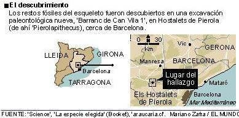
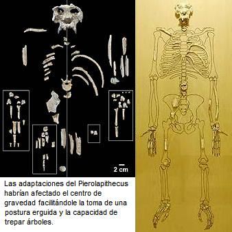
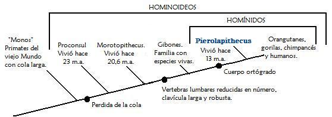

Cuando Darwin hizo pública la idea de la descendencia común a muchas personas les pareció repulsiva la idea que los humanos estuviesen emparentados con los simios. Una muestra de esta reacción es una caricatura publicada en 1871 en la que se muestra a Charles Darwin con el cuerpo peludo abrazando a un chimpancé.

A pesar que la hostilidad hacía la biología evolutiva es menor hoy que en los días de Darwin [1], existe un gran porcentaje de personas que no comprenden la teoría de la evolución, y muchas de ellas piensan que los científicos afirman que los humanos descienden de los chimpancés.
La evolución no enseña que los humanos provienen de los chimpancés o de cualquier otro primate actual; esta establece que tanto los humanos como los simios de hoy tienen un ancestro en común. Las personas que objetan la evolución por pensar que si los humanos evolucionaron de los monos estos no deberían actualmente existir están cayendo en un error mayor. Esta segunda objeción es equivalente a preguntar, “¿Si los niños descienden de los adultos, por qué aún existen adultos?” Las nuevas especies evolucionan por ramificación de las ya establecidas, y si las poblaciones quedan aisladas del tronco principal acumulando suficientes características como para permanecer diferentes de allí en adelante. La especie parental puede sobrevivir indefinidamente junto a la especie hija, puede dar origen luego a otras especies, o puede llegar a extinguirse.
Los paleontólogos, científicos encargados de estudiar la vida prehistórica, durante mucho tiempo habían anhelado encontrar los restos fosilizados de aquella especie de antropomorfo de la cual descendieron los orangutanes, gorilas, chimpancés, bonobos y seres humanos; este sueño se cumplió en el 2002.
Un simio en España
El 5 de diciembre de 2002 una excavadora preparaba en un terreno para un vertedero de basuras cerca de Els Hostalets de Pierola, España, cuando desenterró un diente. En este sitio se encontraba un equipo de científicos quienes estaban atentos por si aparecía algún fósil interesante.
El diente desenterrado era un canino que no parecía de un carnívoro. Pronto excavaron un poco más el terreno y apareció la cara. Los científicos se dieron cuenta que esta cara pertenecía a un miembro del orden de los primates, puesto que presentaba las orbitas oculares mirando al frente (poseía visión binocular), además que las órbitas oculares estaban rodeadas de hueso en su totalidad, también los dientes son característicos y ofrecen mucha información. En medio de su admiración los paleontólogos llamaron al científico Salvador Moyà-Solà, quien quedo fascinado con la cara de este primate. Los análisis de datación apuntaban que las rocas en las que se encontraba este fósil tienen una antigüedad que ronda los 13 millones de años, lo cual ubica a este simio en la época del Mioceno (cuarta época del período Terciario que empezó hace 26 m.a. y terminó hace 6. Abarcó en total 20 millones de años).
Los restos del primate correspondían a una nueva especie de simio que fue bautizada “Pierolapithecus catalaunicus” que significa Simio catalán de Pierola. Los paleontólogos también bautizaron la excavación como “Barranc de Can Vila 1” y allí hallaron restos del cráneo, dientes, vértebras, costillas, dedos de pies y manos del Pierolapithecus. La información que los científicos pudieron obtener de estas estructuras es muy importante. Por ejemplo, al comparar la longitud de las falanges de Pierolapithecus con las de otros primates, los científicos se dieron cuenta que este simio tenía las manos más cortas que las de los chimpancés y orangutanes actuales, por lo tanto dedujeron que este nuevo simio no podía colgarse de las ramas de los árboles.
Los científicos notaron que el esqueleto del Pierolapithecus muestra un plan corporal ortógrado. Esto quiere decir que el esqueleto muestra características tales como tener los omoplatos en la espalda y no a los lados del cuerpo como ocurre en los caballos o los perros, un tórax amplio (mas ancho que profundo), zona lumbar relativamente corta y rígida, y la articulación de la muñeca en la que solo uno de los huesos del antebrazo, el radio, se une flexiblemente con los huesos de la muñeca (esta última característica le dio a este simio una mayor capacidad de rotación y movilidad a la mano). Todas estas adaptaciones ayudaron al Pierolapithecus, y a las especies que evolucionaron de él, a trepar a los árboles.
Fósiles famosos como “Lucy”, la Australopithecus afarensis de 3,4 millones de años o “el niño de Taung”, un Australopithecus africanus con 2,3 millones de años, son muy posteriores al Pierolapithecus; esto hace que este último sea muy importante para entender la evolución de los primates y para comprender como se alumbró el primer homínido bípedo que dio lugar a Lucy y a toda su descendencia. La importancia de Pierolapithecus es mayor aún si se tiene en cuenta que los restos de primates son escasos para el mioceno.

Un ecosistema diferente
Hace 13 millones de años el ambiente español en el que se encontraba el Pierolapithecus era muy diferente de cómo es en la actualidad. Este ambiente era un bosque de clima cálido. Otros fósiles muestran que el Pierolapithecus compartía el bosque con ciervos pequeños, elefantes y rinocerontes primitivos, tortugas pequeñas y otras de medio metro de altura. La dieta de este nuevo simio sería principalmente frugívora, aunque al igual que los chimpancés de vez en cuando añadiría algo de proteína a su dieta con algo de carne.
El mioceno, la época en la que vivió el Pierolapithecus, se caracterizó porque en ella se dieron cambios climáticos importantes. El mundo llego a ser un lugar seco y frío. Como resultado los bosques se redujeron y los pastizales se extendieron. Los animales del mioceno se adaptaron a este mundo cambiante, y como resultado de este cambio climático se ve la aparición de adaptaciones que favorecieron en el Pierolapithecus la postura erecta. No obstante, antes que los cambios climáticos llegarán a reemplazar los bosques cálidos, Europa estuvo habitada por muchas especies de simios.

Un antepasado en el lugar predicho
La evolución biológica es sencillamente el cambio de la estructura genética de las poblaciones al pasar el tiempo. Por esto si los biólogos quieren saber que tan relacionadas están dos especies es necesario analizar su ADN. A inicios de la década de los 1960’s los biólogos Vincent Sarich y Allan Wilson empezaron a comparar el ADN de los grandes simios y los seres humanos a fin de encontrar respuestas sobre el parentesco evolutivo de estas especies. Los resultados de estos estudios mostraron que los chimpancés están más emparentados con los seres humanos que con los gorilas, o en otras palabras, el antepasado común de chimpancés y humanos vivió más recientemente que el antepasado común del hombre con el gorila (por tal razón ya no se ubican a los gorilas y chimpancés en una familia aparte de la del hombre, sino que ya todos se clasifican dentro de la familia de los homínidos).
Sarich y Wilson se dieron cuenta que también podían utilizar los datos de la comparación de ADN para estimar la época en la que los diferentes linajes de simios se separaron. Los investigadores infirieron que las diferencias entre secuencias del ADN de los grandes simios y el humano corresponden al tiempo que ha pasado desde que eran la misma cosa. Las diferencias entre secuencias del ADN se deben a las mutaciones que se han dado, fijado y extendido en cada población; es de suponer que entre más tiempo haya transcurrido desde la separación de dos linajes mayor cantidad de diferencias genéticas habrán y viceversa.
Gracias a la comparación de secuencias de ADN y de una técnica denominada hibridación ADN-ADN se puede estimar que el último antepasado común de orangutanes, gorilas, chimpancés y seres humanos vivió hace unos 12 millones de años (con un margen de más o menos dos millones de años) y el último antepasado común de todos los simios africanos y el humano vivió entre hace 8 o 9 millones de años. [2]

El Pierolapithecus, con una edad de 13 millones de años, cae en el rango de tiempo que los análisis de hibridación de ADN-ADN han estipulado para el antropomorfo que fue el antepasado común para los grandes simios. Todo esto, junto con características anatómicas como la tendencia a una postura erguida, quijada retraída y otros rasgos que se observan en todos los grandes primates, incluyendo los humanos, hace científicos como Salvador Moyà-Solá ubiquen al Pierolapithecus como el tronco común del que descienden orangutanes, gorilas, chimpancés, bonobos y humanos.
El antecesor de los humanos y solo los grandes antropomorfos africanos, gorilas, chimpancés y bonobos, es cuestión de debate. Algunos paleontólogos, como el español Juan Luis Arsuaga, consideran que el simio Ourunapithecus (también llamado Graecopithecus) en yacimientos entre 10 a 8 millones de años es el tatarabuelo prehistórico de los simios africanos (incluido el hombre), mientras que otros consideran que el Kenyapithecus, con una edad entre 12 a 15 millones de años es mejor candidato. Sin embargo, el Kenyapithecus parece ser muy antiguo y no encaja con la edad esperada según la comparación de secuencias de ADN, lo que si ocurre con el Ourunapithecus. Cualquiera fuese el ancestro de los grandes primates africanos, este sería muy probablemente descendiente del Pierolapithecus catalaunicus, lo que convierte a este antropomorfo miocénico en el tátara-tatarabuelo no solo de los humanos sino también de los grandes simios actuales, nuestros primos.

Notas
Otras lecturas relacionadas con el tema publicadas en Sindioses
-
El hombre en el grupo de los primates:
En esta lectura se hace un recorrido por la clasificación biológica del humano en el orden de los primates presentando los caracteres anatómicos que justifican tal clasificación.
-
Conozcan a mi primo el chimpancé:
Un interesante ensayo sobre la división tajante y discontinua que las personas hacen en sus mentes al hablar de simios y humanos.
Volver a la sección Ciencias de los orígenes
Comentarios
Comments powered by Disqus